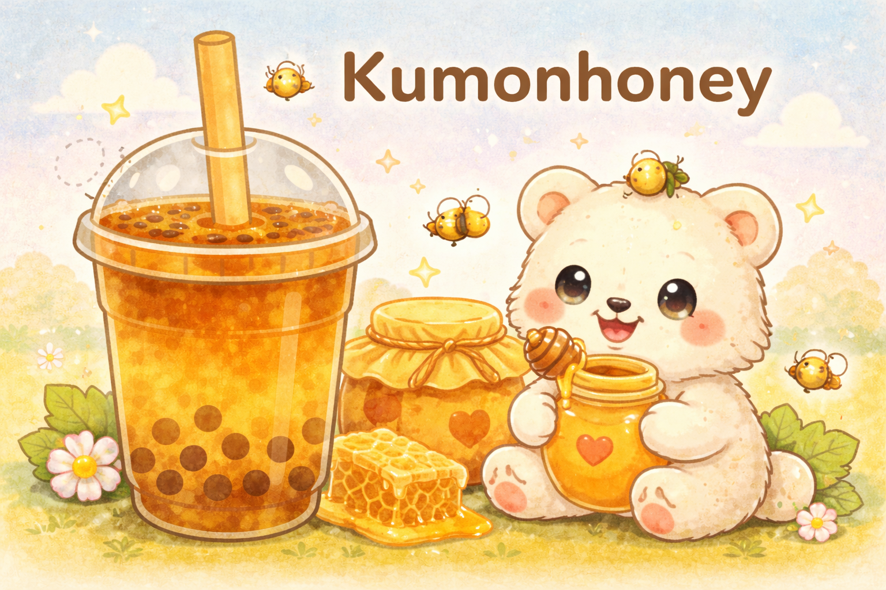

A gentle, soothing cup inspired by golden afternoons. Kumonhoney brews smooth oolong tea and sweetens it with rich Kumon syrup and natural honey, creating a mellow, aromatic flavor with a soft floral finish. Comforting, lightly sweet, and perfectly balanced — like a warm hug in drink form.